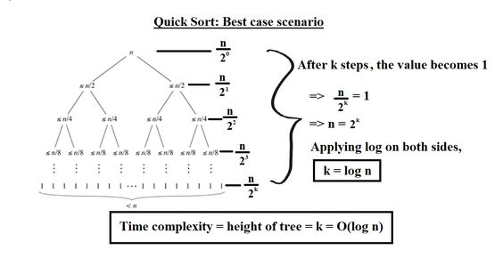
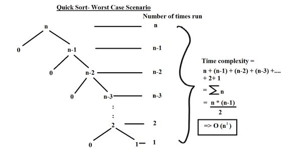

Best case scenario: cel mai bun scenariu are loc atunci cand partitiile sunt cat mai echilibrate posibil, adica dimensiunile lor de ambele parti ale pivotului sunt fie egale, fie au o diferenta de 1 element una fata de cealalta.
Primul caz: Cazul in care dimensiunile sublistului de pe ambele parti ale pivotului devin egale apare atunci cand subarray-ul are un numar impar de elemente si pivotul este chiar in mijloc dupa partitionare. Fiecare partitie va avea (n-1) / 2 elemente.
Cel de-al doilea caz: Diferenta de marime dintre una din cele doua subliste de o parte sau de alta pivotului are loc daca subarray-ul are un numar par, n, de elemente. O partitie va avea n / 2 elemente, iar cealalta avand (n / 2) -1.
In oricare dintre aceste cazuri, fiecare partitie va avea cel mult n / 2 elemente, iar reprezentarea in arbore a dimensiunilor subproblemelor va arata astfel:
Cea mai buna complexitate a algoritmului QuickSort este O (logn)
Worst case scenario: Acest lucru se intampla atunci cand intalnim cele mai dezechilibrate partitii posibile, atunci apelul initial dureaza n * timp, apelul recursiv pe elemente n-1 va dura (n-1)*timp, apelul recursiv pe elemente (n-2) va dura (n-2)*timp si asa mai departe. Cel mai rau caz complexitatea timpului Quick Sort ar fi:
